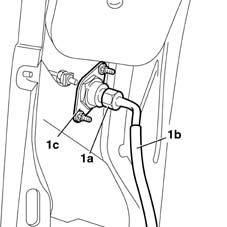
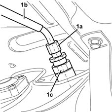

1043A34 filler pipe from fitting to gpl tank r r
- Path
- Procedures > 10 ENGINE UNIT > 1043 LGP TANK AND PIPES > 1043A gpl tank > 1043A34 filler pipe from fitting to gpl tank r r
- Kind
- repair procedure (removal / refitting; the operation number is the code)
- Applies to
- engines: 1.6 16v; all production periods; only with equipment: GPOWER
- Interactive page
- https://sloeber94.github.io/elrnDB-fMltpl/en/#/2891497
Applies to: engines: 1.6 16v; all production periods; only with equipment: GPOWER and Euro 3
 Removing
Removing
 Refitting
RefittingDrain the section of the pipe from the recharging filler to the tank, following the procedure and the instructions given 1043A02 lpg system lines pipe draining operations .
Place the car on a lift.
Disconnect the battery negative terminal.
1043E12 gpl tank guard protection r r .
- 4450B08 right rear wheel r r .
7055B43 REAR WHEEL ARCH liner (one), left or right - R.R. .
1. Undo the connector (1a) between the LPG filler pipe and the filler mounting (1c).

Applies to: engines: 1.6 16v; all production periods; only with equipment: GPOWER and Euro 3
1. Undo the connector (1a) between the pipe (1b) and the 80% valve (1c) on the LPG canister.

Applies to: engines: 1.6 16v; all production periods; only with equipment: GPOWER and Euro 3
Release the entire pipe from the retaining bands, then remove it.
Applies to: engines: 1.6 16v; all production periods; only with equipment: GPOWER and Euro 3
Refitting
RemovingCheck the condition of the pipe making sure that there are no cracks, holes or any other damage that could adversely affect the safety of the system.
If there is a problem, replace the entire pipe.
Position the pipe and secure it to the retaining bands on the underbody.
Tighten the connectors for the pipe to the 80% valve on the LPG canister and to the LPG filler mounting to torque.
 | Fastening | Component | Ø | Value (daNm) |
|---|---|---|---|---|
- | Connection | PIPE FROM FILLER TO LPG TANK | 1/4 GAS | 1.6 |
7055B43 REAR WHEEL ARCH liner (one), left or right - R.R. .
- 4450B08 right rear wheel r r .
1043A04 gpl system and pipes check for leaks .
1043E12 gpl tank guard protection r r .
Connect the battery negative terminal.
Remove the vehicle from the ramp.